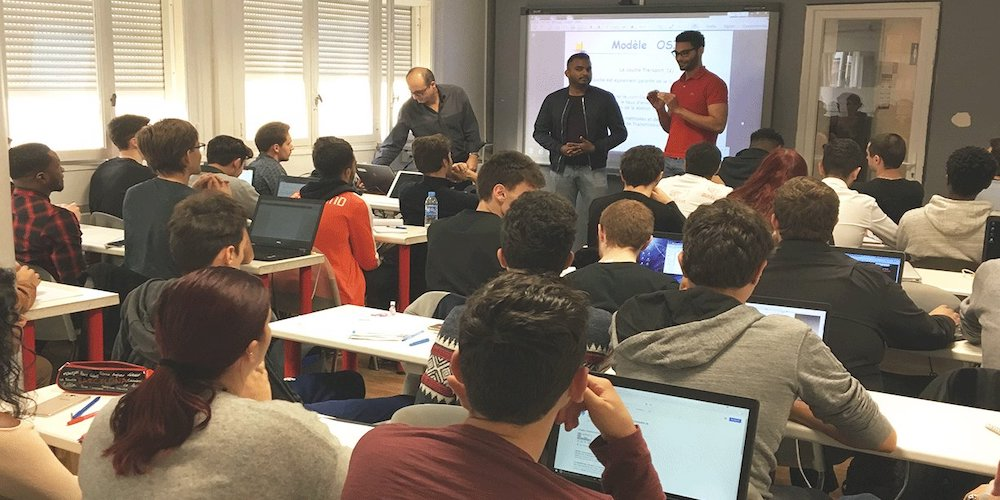

BTS SIO

BTS SIO :
Le BTS Services informatiques aux organisations – BTS SIO vous forme aux métiers d’administrateur réseau ou de développeur, et comporte deux options :
Option SISR : solutions d’infrastructure, systèmes et réseaux. Cette option ouvrira des voix dans les métiers du réseau.
Option SLAM : solutions logicielles et applications métiers. Pour s'orienter plus dans le développement
Le BTS SIO est un diplôme bac+2 de niveau 5 au RNCP, qui délivre 120 crédits ECTS et permet la poursuite d’études si vous le souhaitez.
LE BTS EN VIDÉO
Une courte description d'un BTS SIO en vidéo disponible sur youtube
LES DÉBOUCHÉS
OPTION SLAM :
Solutions Logicielles et Applications Métier
Chef de projet web et stratégie digitale
Concepteur développeur web (ARIES)
Développeur de solutions mobiles et connectées
Responsable en ingénierie des logiciels (CESI)
Licence pro mention métiers de l'informatique : applications web
Licence pro mention métiers de l'informatique : conception, développement et test de logiciels
Classe préparatoire ATS ingénierie industrielle
TP Concepteur développeur d'applications
OPTION SISR :
Solutions d’Infrastructure, Systèmes et Réseau
Administrateur(trice) système, réseau et sécurité
Administrateur(trice) systèmes, réseaux et bases de données
Chef(fe) de projet logiciel et réseau
Concepteur de systèmes d'information
Responsable en ingénierie systèmes et réseaux (CESI)
Licence pro mention métiers de l'informatique : administration et sécurité des systèmes et des réseaux
Licence pro mention métiers des réseaux informatiques et télécommunications
Classe préparatoire ATS ingénierie industrielle
*Sources provenant du site de l'ONISEP